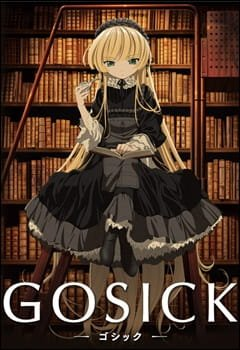

Очень приятно, Бог
Это аниме, которое рассказывает историю девушки по имени Нанами Момозоно, которая оказывается выброшенной на улице без дома и семьи. В затруднительном положении, она встречает странного мужчину, который предлагает ей стать богом святилища, которое охраняет лес, и жить вместе с ним в священном доме.
Аниме отличается интересным сюжетом, множеством юмора, и прекрасными персонажами. Оно исследует темы, связанные с приключениями, дружбой, любовью и силой духовного мира. "Очень приятно, Бог" показывает, что даже в самых трудных моментах, можно найти силы и веру в себя, и что друзья и близкие могут помочь преодолеть все препятствия на пути к успеху.
Жанры: Демоны, Комедия, Романтика, Сверхъестественное, Сёдзё, Фэнтези


![Очень приятно, Бог Это аниме, которое рассказывает историю девушки по имени Нанами Момозоно, которая оказывается выброшенной на улице без дома и семьи. В затруднительном положении, она встречает странного мужчину, который предлагает ей стать богом святилища, которое охраняет лес, и жить вместе с ним в священном доме. Аниме отличается интересным сюжетом, множеством юмора, и прекрасными персонажами. Оно исследует темы, связанные с приключениями, дружбой, любовью и силой духовного мира. "Очень приятно, Бог" показывает, что даже в самых трудных моментах, можно найти силы и веру в себя, и что друзья и близкие могут помочь преодолеть все препятствия на пути к успеху. Жанры: Демоны, Комедия, Романтика, Сверхъестественное, Сёдзё, Фэнтези](OcemiPriatnoBog.jpg){kind=link}
![ Готика Это аниме, которое происходит в вымышленной Европе в 1920-х годах. Оно рассказывает историю японского студента по имени Кудзо Акияма, который переехал в Европу для учебы. В один день он встречает загадочную девушку Викторику де Блуа, которая является гением и обладает удивительными способностями в решении различных преступлений и загадок. Аниме отличается красивой анимацией, интересным сюжетом и превосходной характеризацией персонажей. Оно также исследует темы, связанные с любовью, дружбой и справедливостью, и показывает, как важно верить в себя и своих друзей в борьбе с несправедливостью. Жанры: Детектив, Драма, Исторический, Романтика](Gotika.jpg){kind=link}
![Торадора! Это аниме, которое рассказывает историю двух школьников, Рюдзи Такасу и Таига Аисака. Рюдзи является обычным школьником, который выглядит довольно серьезным, но при этом он добрый и отзывчивый. Таига, с другой стороны, является маленькой, но энергичной девушкой, которая скрывает свои истинные чувства за жестоким поведением. Аниме отличается чувственным сюжетом и красивой анимацией. Оно исследует темы, связанные с любовью, дружбой и отношениями между людьми. "Торадора!" показывает, что любовь может быть сложной и болезненной, но также и прекрасной и важной для нашей жизни. Жанры: Драма, Комедия, Повседневность, Романтика, Школа](Toradora.jpg){kind=link}